We study the problem of the motion of a rigid elliptical particle freely suspended in a shear flow as described by Jeffery (1922) [The motion of elliptical particles immersed in viscous fluid, Proc. Roy. Soc. A 102 161-179]. The problem is solved using oomph-lib's inline unstructured mesh generation procedures to modify the fluid mesh in response to changes in orientation of the ellipse.
Overview of the problem

We consider an ellipse with centre of mass fixed at the origin of a Cartesian coordinate system 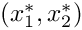, but immersed in a viscous fluid undergoing a linear shear flow with shear rate  . In the absence of the ellipse the fluid velocity field would be 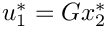, 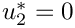, where 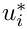 is the dimensional velocity component in the
. In the absence of the ellipse the fluid velocity field would be 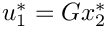, 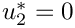, where 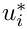 is the dimensional velocity component in the  coordinate direction.
coordinate direction.
The configuration of a rigid body in two dimensions is determined entirely by the position of its centre of mass, 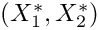 and an angle, 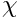 that specifies its orientation to a fixed axis. The equations governing the motion of the particle are then simply conservation of linear and angular momentum:
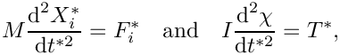
where 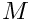 is the mass of the body,  is its moment of inertia about the centre of mass, 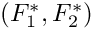 is the resultant force on the body and 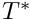 is the resultant torque about the centre of mass.
is its moment of inertia about the centre of mass, 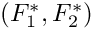 is the resultant force on the body and 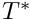 is the resultant torque about the centre of mass.
In the present context, the force and torque on the body are entirely due to the viscous fluid loading on its surface in which case
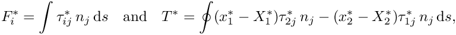
where the integral is around the perimeter of the ellipse, 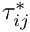 is the fluid stress tensor and 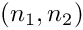 is the unit normal to the ellipse surface, directed away from the solid body.
We non-dimensionalise the rigid-body equations, using the same problem-specific reference quantities as used in the non-dimensionalisation of the Navier–Stokes equations, described in another tutorial. Thus,  is a typical fluid velocity, 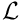 is the length scale,
is a typical fluid velocity, 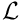 is the length scale,  is the time scale and the fluid pressure is non-dimensionalised on the viscous scale, 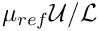, where 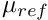 is the reference fluid viscosity. Hence,
is the time scale and the fluid pressure is non-dimensionalised on the viscous scale, 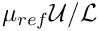, where 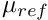 is the reference fluid viscosity. Hence,
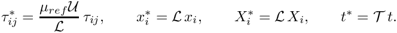
The external forces and torques are non-dimensionalised on the viscous scales per unit length, 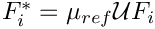 and  . The dimensionless rigid-body equations are then
. The dimensionless rigid-body equations are then
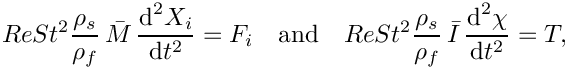
where the dimensionless parameters
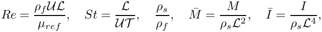
are the Reynolds number, the Strouhal number, the density ratio, and the dimensionless mass and moment of inertia, respectively. In the above  is the fluid density and 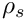 is the solid density.
is the fluid density and 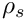 is the solid density.
In the specific problem considered here, the centre of mass is fixed, and the only possible motion of the particle is free rotation. The particle motion is therefore reduced to the solution of a single equation for the unknown angle. We choose 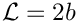, the major axis of the ellipse, 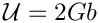 and 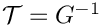, so that 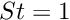 and the governing equations for the fluid and solid become
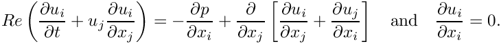
and
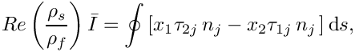
.We perform the computations in the domain 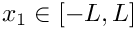 and 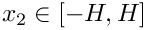, and apply the boundary conditions
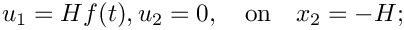
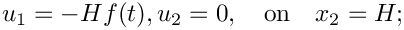
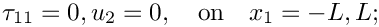
where 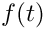 is a smooth ramp function such that 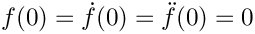 and 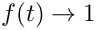 as .
. Results
Jeffery (1922) showed that for a two-dimensional ellipse in Stokes flow (  ), the exact solution for the angle as a function of time is
), the exact solution for the angle as a function of time is
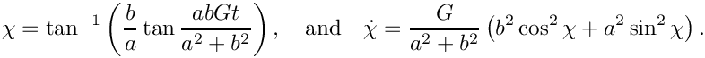
Thus, the ellipse performs periodic orbits but with a non-uniform velocity. For sufficiently small  , Ding & Aidun (2000) [The dynamics and scaling law for particles suspended in shear flow with inertia, J. Fluid Mech. 423 317-344] showed that the system approximates the Jeffery orbits but with an increased period. Typical solutions for 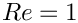 are shown below.
, Ding & Aidun (2000) [The dynamics and scaling law for particles suspended in shear flow with inertia, J. Fluid Mech. 423 317-344] showed that the system approximates the Jeffery orbits but with an increased period. Typical solutions for 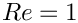 are shown below.
Implementation as a fluid-structure interaction problem
The problem is a fluid-structure interaction problem in which the structural dynamics are particularly simple, depending only on a single degree of freedom. Nonetheless, the two types of physical coupling between the fluid and the solid remain:
- The position of the free boundary depends on the position of the rigid body.
- The rigid body is loaded by the fluid traction.
As in other 2D unstructured FSI problems, we treat the fluid mesh as a pseudo-solid body and determine the position of the boundary nodes on the fluid-solid interface using
ImposeDisplacementByLagrangeMultiplierElements.
The rigid body mechanics is handled by using a GeomObject that represents the perimeter of the rigid body to create an ImmersedRigidBodyElement that solves the three equations of motion for a rigid body; and the load is applied to the rigid body using NavierStokesSurfaceDragTorqueElements.
Problem Parameters
We use a namespace to define the parameters used in the problem
Defining the ellipse as a GeomObject
We create a basic GeomObject to represent the ellipse whose boundary we parametrise by the polar angle, measured from its centre of mass.
The driver code
After parsing the command-line arguments, which are used to modify certain parameters for validation runs, a single instance of the UnstructuredImmersedEllipseProblem (described below) is constructed using Taylor Hood elements.
After construction the Nodes on the boundary of the ellipse will have been directly mapped onto the curvilinear surface using a strong (collocation) condition, 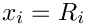, where 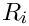 is the corresponding boundary of the ellipse. In the full problem the displacement boundary condition is enforced weakly via Lagrange multipliers 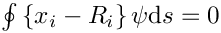. In order to ensure consistency, we initially solve the problem in which the rigid body is pinned so that the boundary nodes are adjusted to be consistent with the weak form of the boundary condition. We note that for sufficiently fine initial meshes the difference is minimal.
Now that we have a consistent initial condition, we initialise the timestepper and set conditions consistent with a impulsive start from rest.
We then take a fixed number of timesteps on the initial mesh, documenting the solution after each solve.
Finally, we loop over a number of `‘cycles’' in which we adapt the problem and then solve for a fixed number of time steps on the each mesh.
The Problem class
The Problem class follows the usual pattern. The time-dependent boundary conditions are applied using the actions_before_implicit_timestep() function and the no-slip boundary condition is applied in actions_before_newton_convergence_check() via an auxiliary node update function.
Recall that when adapting an unstructured mesh, its constituent elements are completely re-generated. Physical parameters and boundary conditions must therefore be reassigned, which is the task of the complete_problem_setup() function, called in actions_after_adapt(). Helper functions are also provided to solve the initial problem to move the boundary nodes [solve_for_consistent_nodal_positions()]; to apply the boundary conditions [set_boundary_velocity()]; and to construct and delete the surface elements that impose the Lagrange multiplier constraints and compute the load on the rigid body [create_lagrange_multiplier_elements(), delete_lagrange_multiplier_elements(), create_drag_elements(), delete_drag_elements()].
The class also provides storage for the meshes, the rigid body and file handles for documentation.
The Problem Constructor
We begin by opening the output files and allocating two time steppers, one for the fluid problem and one for the rigid body problem.
We then define the geometry that defines the outer boundary of the unstructured mesh by constructing a TriangleMeshPolygon that consists of four straight-line boundaries.
Next we build the single ImmersedRigidBodyElement from an instantiation of a GeneralEllipse geometric object.
The ImmersedRigidBodyElement is used to define a TriangleMeshCurvilinearClosedCurve in exactly the same way as if it were simply a (passive) GeomObject, as discussed in another tutorial.
We then build the unstructured fluid mesh using the boundary information, set a spatial error estimator and complete the setup of the problem
The ImmersedRigidBodyElement is not deleted during the adaptation process and so its physical parameters can be set once in the constructor. We set the initial position of the centre of mass, as well as the non-dimensional mass and moment of inertia shape, the Reynolds and Strouhal numbers, and the density ratio, which appear in the governing equations above. For this problem, we also fix the location of the centre of mass. (The section Comments and Exercises contains an exercise that asks you to explore what happens when you omit this step).
For later reference, we store the single ImmersedRigidBodyElement in a mesh
We then create the elements that apply the load on the rigid body and pass the entire mesh of elements to the rigid body. This is the equivalent of the function FSI_functions::setup_fluid_load_info_for_solid_elements(..), but here the procedure is very simple because all the surface elements affect the single rigid body.
We next create the mesh of Lagrange-multiplier elements that drive the deformation of the fluid mesh in response to the motion of the ellipse
and then construct the global mesh and assign equation numbers.
Note that the Drag_mesh_pt does not need to be added as a sub-mesh because its elements do not contribute directly to the residuals and Jacobian.
Completing the problem setup
The helper function complete_problem_setup() starts by (re-)applying the boundary conditions by pinning the fluid velocity in the  -direction on all boundaries and that in the
-direction on all boundaries and that in the  -direction on the top and bottom (boundaries 1 and 3).
-direction on the top and bottom (boundaries 1 and 3).
The boundary conditions for the solid degrees of freedom that describe the mesh deformation are assigned next by pinning the nodal positions on the fixed domain boundaries (boundaries 0, 1, 2, 3):
The nodes on the boundary of the rigid body should be free to move, so they are unpinned and an auxiliary node update function is set to apply the no-slip boundary condition from the Node's positional history values.
We then loop over the fluid elements and set pointers to the physical parameters and the apply the velocity boundary conditions
Creating and destroying the surface elements
The general procedure for creating, attaching and deletingFaceElements is exactly the same as described in another tutorial, so is not described in detail here.
The functions create_lagrange_multiplier_elements() and create_drag_elements() construct surface ImposeDisplacementByLagrangeMulitiplierElements and NavierStokesSurfaceDragTorqueElements, respectively, around the boundary of the rigid body, setting any required member data. For example, the NavierStokesSurfaceDragTorqueElements require the location of the centre of mass in order to compute the torque. The elements are added to the internal storage containers Lagrange_multiplier_mesh_pt and Drag_mesh_pt. The corresponding functions delete_lagrange_multiplier_elements() and delete_drag_elements() are used to delete and remove the elements before adaptation.
Setting the boundary velocity
The function set_boundary_velocity() is used to apply the time-dependent boundary conditions to the external boundaries of the fluid domain. The only subtlety is that after a remesh the history values for the boundary nodes must also be (re-)applied; and, for simplicity, the history values are always reset.
Solving for consistent initial nodal positions
The initial nodal positions are made consistent with the weakly-imposed displacement boundary condition by pinning the rigid body degrees of freedom, performing a steady Newton solve and then releasing the rigid body degrees of freedom.
Comments and Exercises
Exercises
- Confirm that for sufficiently large times the solution agrees with Jeffery's analytic solution when you set 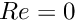. Explain why you expect there to be a discrepancy at early times.
- What happens when the centre of mass is not fixed? Can you explain the observed behaviour?
- What happens if you don't call the function
solve_for_consistent_nodal_positions()? Can you explain the observed behaviour?
- Investigate the behaviour of the system with increasing
 . What happens to the oscillations for 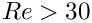?
. What happens to the oscillations for 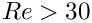?
Source files for this tutorial
- The source files for this tutorial are located in the directory:
demo_drivers/navier_stokes/jeffery_orbit/
- The driver code is:
demo_drivers/navier_stokes/jeffery_orbit/jeffery_orbit.cc
PDF file
A pdf version of this document is available.